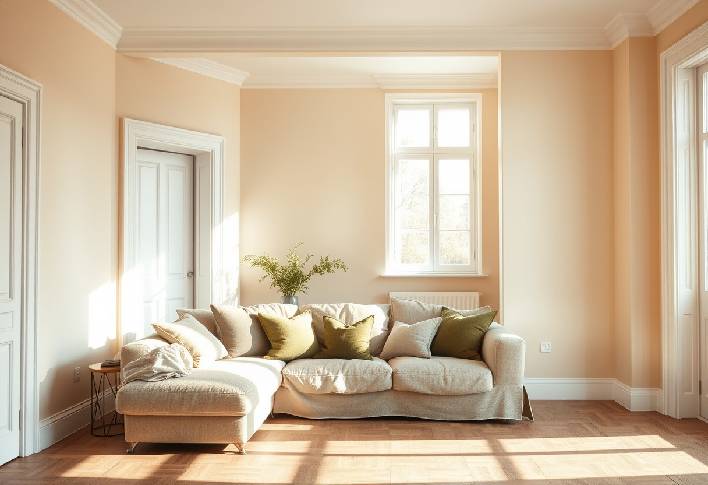
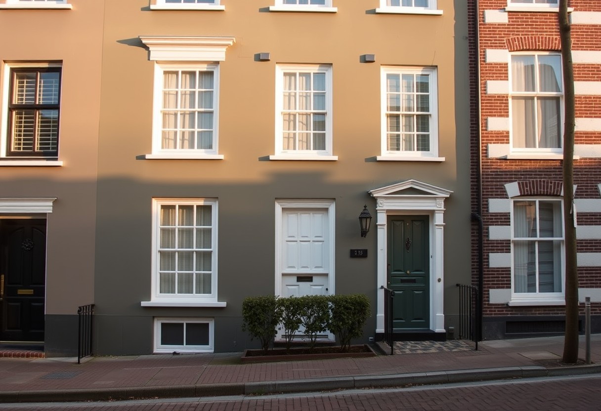

EEF‑01
Binnenschilderwerk
Muren, plafonds, kozijnen en deuren. Van schuren en gronden tot de laatste laag.
Schilderwerken · binnen en buiten
Studio EEF schildert muren, kozijnen, gevels en houtwerk, binnen en buiten. Zorgvuldig afgeplakt, elke dag netjes opgeruimd.
Tik op een staal en zie de gevel meekleuren.
Twijfel je over de kleur? Bij de kennismaking nemen we de verfstalen mee.
Diensten
Muren, plafonds, kozijnen en deuren. Van schuren en gronden tot de laatste laag.
Gevels, kozijnen en houtwerk buiten. Weerbestendig en kleurecht — een laag die jaren meegaat.
Vensterbanken, deuren en retouches. Ook als het om één kozijn of één muur gaat.
Impressies


Werkwijze
We komen langs, bekijken het werk en denken mee over kleur.
Binnen twee werkdagen ligt er een heldere offerte voor je klaar. Geen verrassingen achteraf.
We prikken een datum en plakken alles af: vloeren, randen, beslag. We beginnen pas als je huis beschermd is.
Elke laag krijgt de tijd om goed te drogen. Aan het einde van de dag ruimen we alles op.
Samen lopen we het werk na. Ben je tevreden? Dan pas zijn we klaar.
onze vier kleuren
Over EEF
Studio EEF is een klein schildersbedrijf. Van de eerste afspraak tot de laatste kwaststreek heb je altijd met dezelfde schilder te maken.
We werken in en om [plaats + regio]. Ook klussen waar anderen het bijltje erbij neerleggen — één kozijn, een trappenhuis, een tuinhek dat al jaren wacht — pakken we gewoon aan.
Contact
Bel, mail of app — binnen één werkdag heb je antwoord.